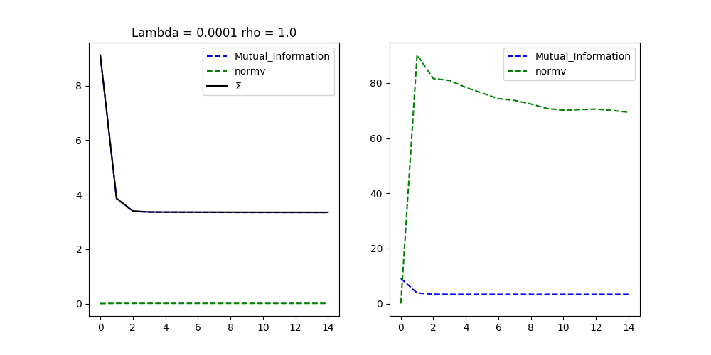
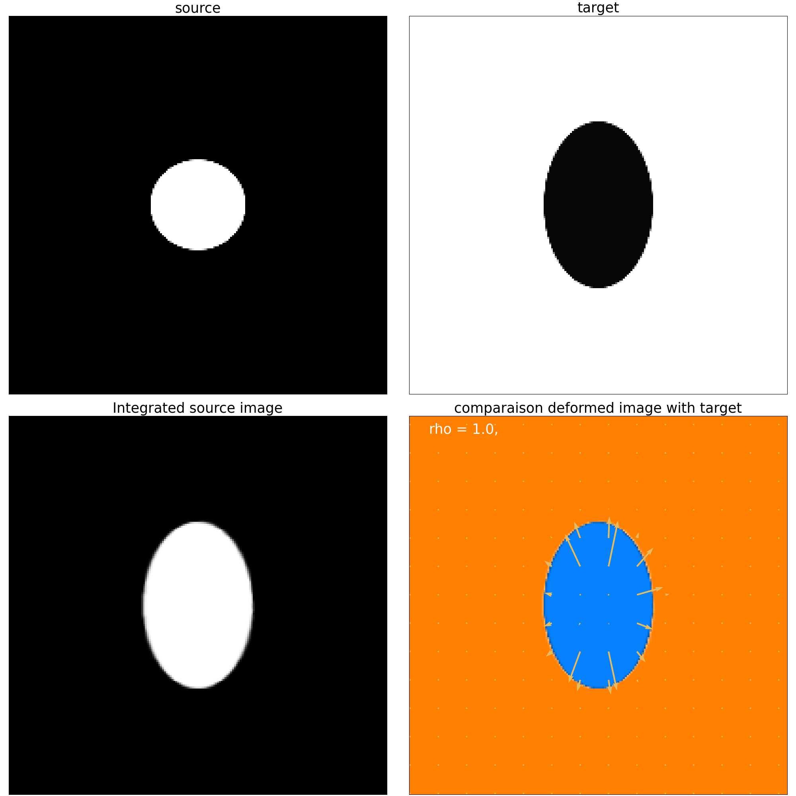
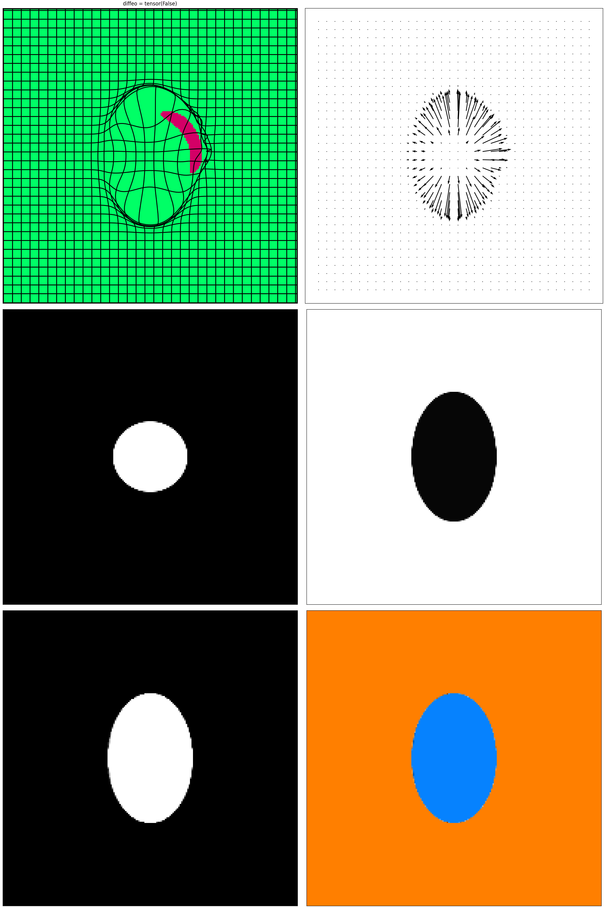

Note
Go to the end to download the full example code.
Data cost variation example: Mutual Information
This example demonstrates how to change the data cost for the registration. We will build a simple toy example mimicking situations we can encounter in medical imaging where the shapes to match are clode in geometry but have different intensity distributions. There are plenty other data costs in the literature for every specific purpose, and we will focus on the mutual information.
Mutual information measures the amount of information shared between two images. It is effective for multi-modal image registration.
Where:
\(X\) and \(Y\) are the images being registered.
\(p(x,y)\) is the joint probability distribution of the intensities.
\(p(x)\) and \(p(y)\) are the marginal probability distributions of the intensities.
Importing the necessary libraries
from demeter.constants import *
import demeter.utils.torchbox as tb
import demeter.metamorphosis as mt
import demeter.utils.reproducing_kernels as rk
/opt/hostedtoolcache/Python/3.12.9/x64/lib/python3.12/site-packages/kornia/feature/lightglue.py:44: FutureWarning: `torch.cuda.amp.custom_fwd(args...)` is deprecated. Please use `torch.amp.custom_fwd(args..., device_type='cuda')` instead.
@torch.cuda.amp.custom_fwd(cast_inputs=torch.float32)
/home/runner/work/Demeter_metamorphosis/Demeter_metamorphosis/src/demeter/utils/toolbox.py:272: SyntaxWarning: invalid escape sequence '\d'
print(f'convert -delay {delay} -loop 0 {folder}/{file_name}_\d{3}.png {folder}/{file_name}.gif')
/home/runner/work/Demeter_metamorphosis/Demeter_metamorphosis/src/demeter/utils/vector_field_to_flow.py:186: SyntaxWarning: invalid escape sequence '\i'
"""
Openning the source and target images
size = (200,200)
S = tb.reg_open('01',size=size)
T = 1 -tb.reg_open('17',size=size)
fig,ax = plt.subplots(1,2)
ax[0].imshow(S[0,0].cpu(),**DLT_KW_IMAGE)
ax[0].set_title('source')
ax[1].imshow(T[0,0].cpu(),**DLT_KW_IMAGE)
ax[1].set_title('target')
set_ticks_off(ax)
plt.show()
As you see in the previous plot, using the Ssd as a data cost will lead to have the ball badly registered. (Try predicting the result before running the code !). However, we can use the mutual information as a data cost to get a better registration.
Now we will create a mutual information data cost object and use it in the registration.
data_term = mt.Mutual_Information(T,mult=1)
# data_term = mt.Ssd(T)
momentum_ini = 0
# momentum_ini = mr.to_analyse[0]
# momentum_ini.requires_grad = True
kernelOp = rk.GaussianRKHS(sigma=(6,6))
mr = mt.lddmm(S,T,momentum_ini,
kernelOperator = kernelOp,
cost_cst=.0001,
integration_steps=5,
n_iter=15,
grad_coef=1,
data_term=data_term,
dx_convention='square',
)
mr.plot()
mr.plot_deform()
plt.show()
- 
- 
- 
Progress: [#---------] 13.33% (Mutual_Information : , 3.8573).
Progress: [##--------] 20.00% (Mutual_Information : , 3.3919).
Progress: [###-------] 26.67% (Mutual_Information : , 3.3576).
Progress: [###-------] 33.33% (Mutual_Information : , 3.3550).
Progress: [####------] 40.00% (Mutual_Information : , 3.3538).
Progress: [#####-----] 46.67% (Mutual_Information : , 3.3525).
Progress: [#####-----] 53.33% (Mutual_Information : , 3.3514).
Progress: [######----] 60.00% (Mutual_Information : , 3.3507).
Progress: [#######---] 66.67% (Mutual_Information : , 3.3497).
Progress: [#######---] 73.33% (Mutual_Information : , 3.3489).
Progress: [########--] 80.00% (Mutual_Information : , 3.3481).
Progress: [#########-] 86.67% (Mutual_Information : , 3.3475).
Progress: [#########-] 93.33% (Mutual_Information : , 3.3468).
Progress: [##########] 100.00% Done...
(Mutual_Information : , 3.3463).
Computation of forward done in 0:00:15s and 0.985cents s
Computation of lddmm done in 0:00:15s and 0.985cents s
Total running time of the script: (0 minutes 19.673 seconds)